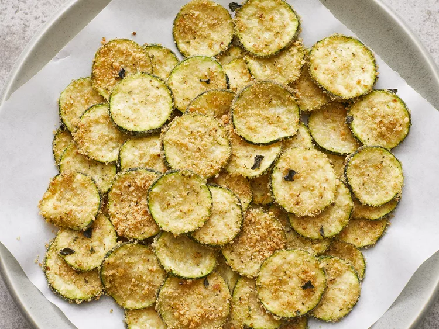

Baked Zucchini Chips

Description
A healthier alternative to fries.
Ingredients
- 3 small zucchine, sliced into 1/4-inch rounds
- 2 tablespoons olive oil
- 1/2 cup Italian seasoned bread crumbs
- 2 tablespoons grated Parmesan cheese
- 2 teaspoons fresh oregano
Steps
- Preheat the oven to 350 degrees F (175 degrees C).
- Place zucchini in a bowl. Drizzle olive oil over zucchini and stir to coat; add bread crumbs and toss to coat. Spread coated zucchini onto a baking sheet. Sprinkle Parmesan cheese and oregano over coated zucchini.
- Bake in the preheated oven until zucchini rounds are tender and cheese is browned, about 15 minutes.